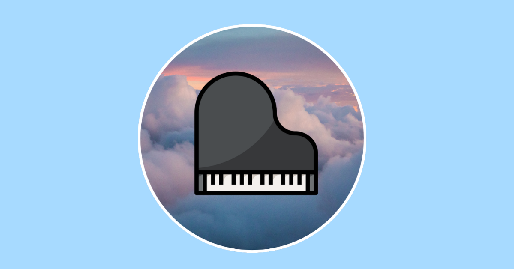

Creator
Film the takes that matter

I've recently been making piano videos where I play the number of notes equal to my subscriber count. For example, playing 266 notes of Love Story, or 277 notes of Passacaglia, or 171 notes of Liebestraum No 3. It's actually more complicated than you guys might think to make them.
Here's a breakdown of what I do, from ideation to recording to editing to uploading.
(this post ended up being kinda long hopefully some people find it interesting)
Ideation
- First I pick a piece (literally harder than you think, choice indecision is real)
- sometimes its classical, sometimes modern, but the beauty of this format is it could be anything, even chords or improv
- I get my computer, plug it into the keyboard, go to peak notes, and start recording note tracking
- then I run through a couple practice rounds to see around where I reach the note count I need, and where I need to slow down and hit the right # of notes when I actually record
Oh yeah by the way I created a custom website to make these videos called PeakNotes, you can visit the site at peaknotesapp.com 👍🎹
Recording
Then its time to record...
- First I put on pants lol
- Then I go get my phone and a POV recorder I bought. Its an imperfect setup but it does the job. I'm buying meta glasses at 1k subs btw. Probably.
- I often get my sunset lamp and portable charger battery (not for all vids but a good %)
- Then I record, try to not mess up, and slow down and hit exactly the note count I need
- I usually only do 1-3 takes
Editing
Now time to put it together...
- First I airdrop the video recorded on my phone to my computer
- actually thats a lie first I create a folder on my MacBook of all the assets I need and name it the todays date (Aug 18, for example)
- from my website peaknotes I then export a midi file and a video of the note counter increasing. I put it in that same aforementioned folder.
- I also put the midi file into garage band and export a steinway piano mp3 file
- Oh yeah also I double lied the first thing I do before any of this is take a screenshot of my YouTube studio sub count so I know how many notes I'm playing. If it somehow increases while Im recording/editing oh well, good problem to have fr
- Now I open capcut, add the piano playing footage, the note video, and the audio mp3 file, and the sub count screenshot
- when editing first I align the audio and the piano playing
- Then I align the note counting video as well as cropping and resizing it
- Then I add text explaining the premise of the video and telling people to subscribe for more notes
Uploading
Then I export it, go to YouTube, add the title, pick a decent frame for the short thumbnail, then I go to TikTok and do the same thing.
As you can see the time to do this can easily climb to be around 2 hours. But eh its fun to do for the most part.
Want to support the channel? Just keep watching :)